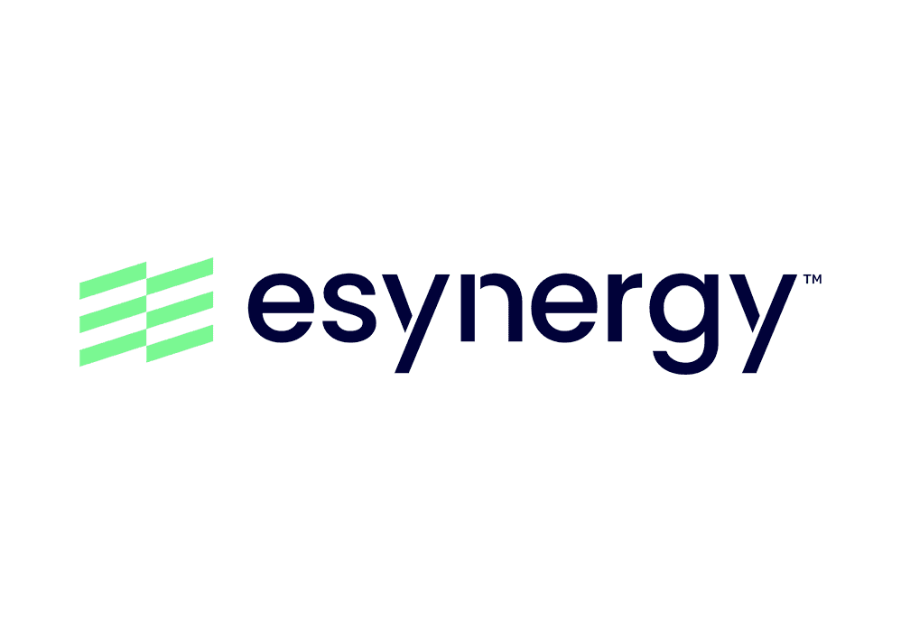

eSynergy Solutions · Patrick
Eight years of VASC: transforming a founder, a leadership team and a company.
The Challenge
The Shift
“I didn't bring a plan. I brought the truth. And then I brought Patrick back to himself.”Drewe Broughton
Vulnerability
Patrick's first breakthrough was telling the truth to his team. He stood in front of them and admitted uncertainty.
That single act changed the culture instantly.
Acceptance
Intensity, instinct, fire, sensitivity. Patrick stopped performing a diluted version of himself and rebuilt his inner alignment.
Sweat & Courage
Honest pitching. Authentic leadership. Pressure transmuted into clarity.